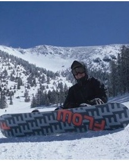
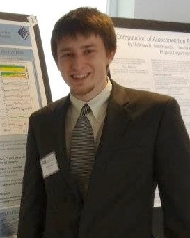

George Clark
Bio: George graduated from UNH with a B.Sc. in Physics and a minor in Astronomy. While an undergraduate there he assisted in the design and development of the star sensor; a positional instrument co-aligned with IBEX-Lo, which assists in mapping the interstellar flow to within 0.1o. He joined the UTSA/SwRI space science program in the Fall 2009 and works under the supervision of Frederic Allegrini. Here he has been heavily involved with the Juno JADE instrument as well as the Cassini MIMI/LEMMS sensor. He participated in the flight calibration of the JADE electron sensors and now develops models to understand the instrument response for future data analysis. He is also apart of the Juno JADE mission operations team. Using energetic electron data from the Cassini LEMMS instrument, he has recently investigated the global structure of pitch angle distributions at Saturn. This works attempts to characterize the source, loss, and transport processes within Saturn’s magnetosphere.
Publications:
- G. Clark, F. Allegrini, B.M. Randol, D.J. McComas, P. Louarn, (2013), Response in electrostatic analyzers due to backscattered electrons: A case study analysis with the Juno Jovian Auroral Distribution Experiment - Electron instrument, Rev. Sci. Instrum., 84, 105109
- G. Clark, C. Paranicas, D. Santos-Costa, et al., (2013), Evolution of electron pitch angle distributions across Saturn’s 10Rs magnetospheric region from MIMI/LEMMS, In Preparation for the PSSS Journal
- D.J. McComas, N. Alexander, F. Allegrini, F. Bagenal, C. Beebe, G.Clark, F. Crary, et al. (2012). Jovian Auroral Dynamics Experiment (JADE) on Juno, Submitted to Space Science Reviews
- Hlond, M., Bzowski, M., Möbius, E., Kucharek, H., Heirtzler, D., Schwadron, N. a., Neill, M. E. O., Clark, G., et al. (2012). Precision pointing of IBEX-Lo observations. The Astrophysical Journal Supplement Series, 198(2), 9. doi:10.1088/0067-0049/198/2/9
- E.Möbius, H. Kucharek, G. Clark, M. O’Neill, et al., “Diagnosing The Neutral Interstellar Gas Flow at 1 AU with IBEX-Lo,” Space Sci Rev (2009) 146: 149-172
Kristie Llera
Bio: I research the global ion and electron precipitation response to magnetospheric-compressions and the subsequent pitch angle distribution. Using low-altitude Energetic Neutral atom (ENA) images from the Two Wide-angle Imaging Neutral-atom Spectrometers (TWINS) mission data, and various low- altitude ion and electron precipitation measurements from NOAA Polar-orbiting Operational Environmental Satellite (POES). I'm also currently involved in constructing and calibrating an instrument for an upcoming CubeSat mission, A Compact Radiation bElt Explorer (CeREs)- that will enhance low-altitude electron precipitation measurement in energy range.
Interests:
- Space Instrumentation
- Data Analysis and Modeling
- Magnetospheric Dynamics
- ENA Imaging of the Ring Current Particle Distribution and Energy Population
Awards:
- NASA/Texas Space Grant Consortium Fellow (2012-2013, 2013-2014)
- Who's Who Among Students in American Universities at UTSA (2012-2013)
- Geospace Environment Modeling (GEM) Workshop student travel support (2012)
- UTSA/SwRI Joint Space Physics PhD fellowship (Fall 2011- Present)
George Nicolaou
Bio: George Nicolaou is a PhD candidate in University of Texas at San Antonio (UTSA) and he is working as research assistant at Southwest Research Institute. He received his degree in physics from the National and Kapodistrian University of Athens. He received MS in Physics from the sector of Astronomy- Astrophysics and Mechanics of the same university. He attended the graduate studies of UTSA- SwRI at 2011. His main interests are data analysis in the area of planetary and heliospheric physics, thermodynamics of space plasma and carbon foils for space instrumentation applications. He is now working on his PhD thesis with title: ''Structure and Dynamics of the deep Jovian Magnatotail: Observations from Solar Wind Around Pluto (SWAP) instrument on New Horizons (NH)'', under the supervision of David McComas. He is also performing experiments under the supervision of Frederic Allegrini, studying the properties of foils that are used in space instrumentation.
Publications:
- Long Term Variability of the Polytropic Index of Solar Wind Protons at 1Au (Solar Physics Journal, 2013)
Kevin Genestreti
Bio: Kevin is a Ph.D. student whose research is performed under the guidance of advisors Jerry Goldstein and Stephen Fuselier. Currently, his research interests involve the derivation of an empirical, statistical characterization for the location and occurrence rate of the near-Earth diffusion region in the terrestrial magnetotail. This research is performed in preparation for the upcoming Magnetospheric Multi Scale (MMS) mission. Kevin also works on the calibration of the MMS Hot Plasma Composition Analyzer (MMS-HPCA), and the cross-calibration of the MMS-HPCA with the Dual Ion Spectrometer (MMS-DIS). Kevin is also studying the terrestrial storage belt, the third short-lived radiation belt. This study is being done with data from the Van Allen Probes spacecraft. Kevin has also participated in the calibration of the Jade-I engineering model. As an undergraduate at the University of New Hampshire, Kevin studied the influence of heavy ions of ionospheric origin on dayside reconnection using data from the Cluster spacecraft. During his undergraduate Kevin also helped perform in-flight calibration of the Cluster-CODIF instrument.
Publications:
- Genestreti, K. J., S. A. Fuselier, J. Goldstein, and T. Nagai (2013), An empirical model for the location and occurrence rate of near-Earth magnetotail reconnection, J. Geophys. Res. Space Physics, 118, doi:10.1002/2013JA019125.50612.
- Genestreti, K. J., S. A. Fuselier, J. Goldstein, T. Nagai and J. P. Eastwood (2013), The location and occurrence rate of near-Earth magnetotail reconnection as observed by Cluster and Geotail, J. Geophys. Res. Space Physics (submitted).
- Kistler, L. M., Mouikis, C. G., and Genestreti, K. J. (2013): In-flight Calibration of the Cluster/CODIF sensor, Geosci. Instrum. Method. Data Syst. Discuss., 3, 221-250, doi:10.5194/gid-3-221-2013, 2013.
Roberto Livi
 Bio: Roberto is a Ph.D.
student currently studying plasma properties in the inner
magnetosphere of Saturn using the Ion Mass Spectrometer (IMS) and
Electron Spectrometer (ELS) onboard the Cassini spacecraft. Plasma
characteristics are derived using a non-linear least squares
fitting routine based on the Levenberg-Marquardt algorithm, which
is specifically tailored to analyze data from the plasma
instruments. The fitting algorithm is also applied to the upper
atmospheric regions of Titan and Enceladus, where the discovery of
negative ions has prompted an in depth analysis of the plasma
structure and creation. In addition, Roberto is studying the
convection of plasma around Saturn's magnetosphere, including an
analysis of adiabatic heating and cooling of hot electrons.
Roberto's advisors are Dr. Jerry Goldstein and Dr. Jim Burch.
Bio: Roberto is a Ph.D.
student currently studying plasma properties in the inner
magnetosphere of Saturn using the Ion Mass Spectrometer (IMS) and
Electron Spectrometer (ELS) onboard the Cassini spacecraft. Plasma
characteristics are derived using a non-linear least squares
fitting routine based on the Levenberg-Marquardt algorithm, which
is specifically tailored to analyze data from the plasma
instruments. The fitting algorithm is also applied to the upper
atmospheric regions of Titan and Enceladus, where the discovery of
negative ions has prompted an in depth analysis of the plasma
structure and creation. In addition, Roberto is studying the
convection of plasma around Saturn's magnetosphere, including an
analysis of adiabatic heating and cooling of hot electrons.
Roberto's advisors are Dr. Jerry Goldstein and Dr. Jim Burch.
Publications:
- Livi, R., J. Goldstein, J. Burch, F. Crary, A. Persoon, A. Rymer and D. Mitchell (2013): "Multi-Instrument Analysis of Plasma Parameters in Saturn's Equatorial, Inner Magnetosphere Using Corrections for Spacecraft Potential and Penetrating Background Radiation". J. Geophys. Res. Space Physics (submitted).
- F. Allegrini, M. I. Desai, R. Livi, S. Livi, D. J. McComas, and B. Randol (2009): "The entrance system laboratory prototype for an advanced mass and ionic charge composition experiment". Rev. of Scientific Instruments. doi:10.1063/1.3247906
David Mackler
Bio: David attended Embry Riddle Aeronautical University (ERAU) in Daytona Beach, Fl. While at ERAU he earned a B.S. in aerospace engineering, a B.S. in engineering physics, and a M.S. in Space Science. He currently works under Dr. Jörg-Micha Jahn studying the inner magnetospheric response to geomagnetic storms using Energetic Neutral Atom images. His interests are space weather, magnetospheric processes, and instrumentation.
Presentations:
- Emission of ENAs from Upper-Atmospheric Altitudes at the Geomagnetic Footpoints of Hot Magnetospheric Plasma Source Regions, J.-M. Jahn, A. Isaksson, D. Mackler, C. J. Pollock, F. Søraas, M. Sørbø, P. Valek, International High Energy Particle Precipitation in the Atmosphere Workshop, 2009
- ENA Emission from Low Altitude: A Survey of Medium Energy Neutral Atom (MENA) Observations from IMAGE, D. Mackler, J.-M. Jahn, D. McComas, C. J. Pollock, D. Schaefer, P. Valek, American Geophysical Union Fall Meeting, 2008
- ENA Pitch Angle Distribution as a Function of Storm Phase: Precursor to Future Work in Mapping ENA/Ion Albedo with Storm Phase, D. Mackler, J.-M. Jahn, J. Mukherjee, C. J. Pollock, American Geophysical Union Fall Meeting, 2010
- ENA Low Altitude Emission Pitch Angle Distribution Obtained from IMAGE/MENA Over the Span of the Mission, D. Mackler, C. J. Pollock, J.-M. Jahn, J. Mukherjee, American Geophysical Union Fall Meeting, 2011
- ENA Low Altitude Emission Configuration Space Distribution Obtained from IMAGE/MENA Over the Span of the Mission, D. Mackler, C. J. Pollock, J.-M. Jahn, J. Mukherjee, Geospace Environment Modeling Summer Workshop, 2012
- Observations of the ENA Geomagnetic Emission Cone, D. Mackler, C. J. Pollock, J.-M. Jahn, Geospace Environment Modeling Summer Workshop, 2012
- Global Distribution of the Energetic Neutral Atom (ENA) / Precipitating Ion Particulate Albedo from Low Altitude Emission (LAE) Source Regions over the Last Solar Maximum, D. Mackler, J.-M. Jahn, J. Mukherjee, C. J. Pollock, American Geophysical Union Fall Meeting, 2012
- The Outer Magnetosphere, D. Mackler, Geospace Environment Modeling Summer Workshop: Student Tutorial, 2013
Sarah Vines
Bio: Sarah is a Ph.D. student coming to the UTSA/SwRI program from Florida Institute of Technology. There she received a degree in Space Sciences-Astrobiology, with undergraduate research in ancient Martian climate modeling and jets from active galactic nuclei. Sarah's current research is with Stephen Fuselier investigating the effects of guide fields on ion velocities in the dayside magnetopause reconnection diffusion region using Cluster data. In preparation for the upcoming MMS mission, she is part of the Hot Plasma Composition Analyzer calibration team. She is also working under Mihir Desai and Stefano Livi developing a polar-orbiting CubeSat, the Compact Radiation Belt Explorer (CeREs), to complement the Van Allen Probes dataset in collaboration with Goddard Space Flight Center. CeREs uses avalanche photodiodes (APDs) sitting atop a solid state detector (SSD) stack to characterize seed populations of energetic electrons in the radiation belts and protons from enhanced solar activity. She is also working on JADE-I calibration in preparation of Juno reaching Jupiter.
Austin Egert
Education:
- M.S. Physics, University of Texas at San Antonio
- B.S. Physics, Pacific Lutheran University
- A.A.S. (D.T.A.), Columbia Basin College
Publications:
- Egert, Austin, Richard Louie. 10 Meter OATS Stepped Frequency Volumetric Site Attenuation. Capstone Presentation, Pacific Lutheran University, Tacoma, WA, May 2006.
- Egert, Austin, J. Hunter Waite, Jared Bell. Empirical Model for Ion Flows Around Jupiter During the Galileo Mission. TSAPS, University of Texas at San Antonio, San Antonio, TX, October 2010.
- Egert, A., J.H. Waite, J.M. Bell, Developing an Empirical Jovian Ion Flow Model. GEM-CEDAR Joint Workshop, Santa Fe, NM, June 2011.
- Bell, J.M., S. Bougher, J.H. Waite, A. Egert, Y. Ma, 3-D Modeling of the Magnetosphere-Ionosphere Interaction in the Outer Solar System, Chapman Conference, Yosemite National Park, CA, February 2014.
Paul Miles
Bio: Mr. Miles works in planetary science and neutral mass spectrometry. He came to SwRI after studying engineering and completing his Master's Degree in physics. In conjunction with Department of Space Science at SwRI, Mr. Miles is pursuing a PhD at the University of Texas at San Antonio with an anticipated 2013 graduation.
His current work focuses on the exosphere of Mercury and the observational implications of the mass spectrometer Strofio that is being prepared for the BepiColombo mission. He is leading an investigation into molecular dissociation by electron impact ionization, targeting minerals found in the regolith of Mercury and the Moon. Major projects have also included illumination analysis supporting the LAMP instrument, an ultraviolet spectrograph onboard the Lunar Reconnaissance Orbiter. Mr. Miles has gained considerable experience in computational modeling, having developed models for the exospheres of Mercury and Rhea and detailed illumination for the lunar surface. He has also contributed to lab operations and instrument development.
Professional Chronology:
- University of Illinois - Dept. of Physics: Teaching Assistant, 2006-2008
- Micromedical Technologies: Software Engineer, 2007
- Southwest Research Institute: Engineer, 2008-2009
- Southwest Research Institute: Research Engineer, 2009-2012
- Southwest Research Institute: Research Scientist, 2012-present
Education:
- Ph.D. Candidate in Physics, University of Texas San Antonio, 2012
- M.S. Physics, University of Illinois, 2008
- B.S. Aerospace Engineering, University of Illinois, 2006
- B.S. Astronomy, University of Illinois, 2006
Don George
Bio: My current research is studying the effects of heavy ions on magnetic reconnection rates using kinetic simulations on a super-cluster platform.
Interests:
- Sensors and instrumentation to study space plasma
- Novel sensor and electronics techniques
- Magnetic reconnection
- Time-of-flight measurement
- Digital Control Systems
- Solid-State Detectors
Education:
- BS Nuclear Engineering, Kansas State University
- MS Electrical Engineering, University of Toledo
Publications:
- D.T. Young et.al, Hot Plasma Composition Analyzer for the Magnetospheric Multiscale Mission, Submitted, Space Science Reviews
- H.O. Funston et.al, Helium, Oxygen, Proton and Electron (HOPE) Mass Spectrometer for the Radiation Belt Storm Probes Mission, February 2013, Space Science Reviews
- S. Reidy, D. George, M. Agah, and, R. Sacks, Temperature-Programmed GC Using Silicon Microfabricated Columns with Integrated Heaters and Temperature Sensors, Anal. Chem. 79, 2911 (2007)
- D. George, E. Salari, Real-Time Pitch Extraction of Voiced Speech, J. of Network and Computer Applications Vol.20 No.4, 379 (1997)
- D. George, D. Kaur, Microcontrolled MIDI Inline Transposer, IEEE 39th Midwest Symposium on Circuits and Systems, Vol. 2 849 (1996)